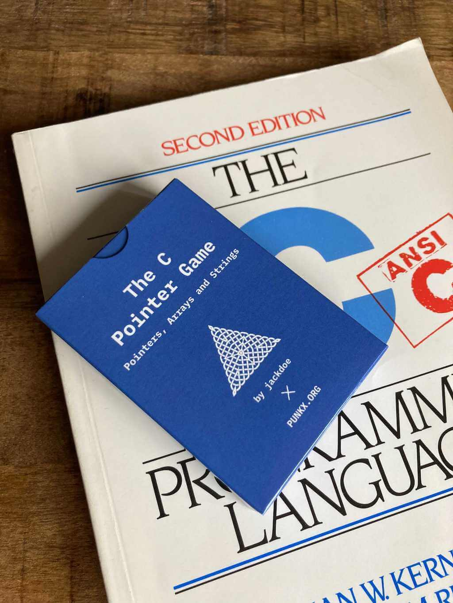
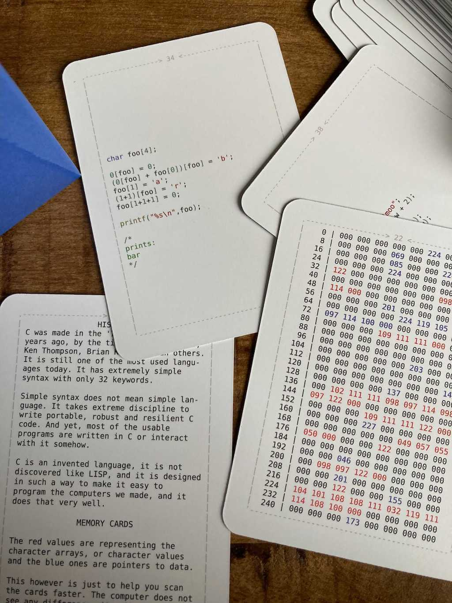
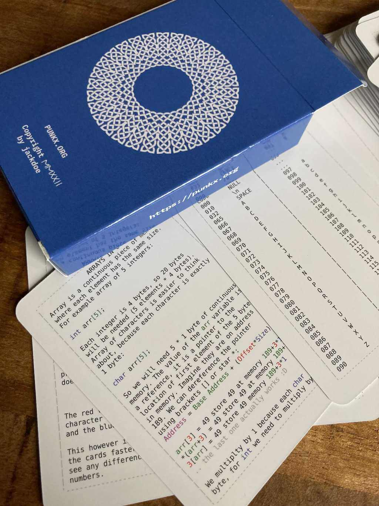
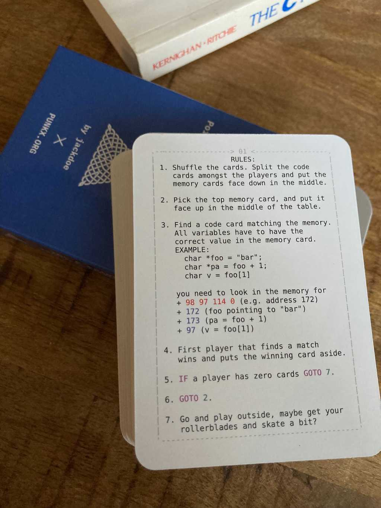
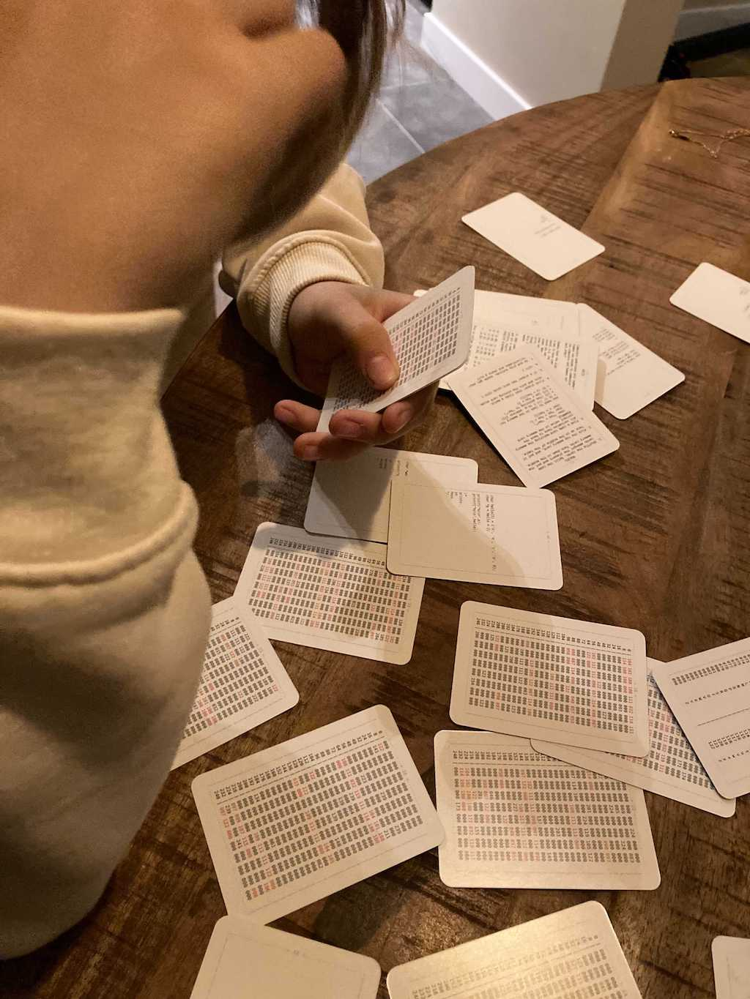

The C Pointer Game - Pointers, Arrays and Strings for Kids
One of the most difficult concepts to grasp in modern programming is the difference between value and reference. This game tries to help with that. The parent has to know a bit of C to play.




Buy now
The parent has to know a bit of C to play, the game has 6 cards explaining the concepts of character, arrays, pointers and strings, but it won't be enough particularly because of the overloaded and confusing &*()[] usage in the language. So you will have to help a bit reading the code. Some of the cards are harder than others, and there is one that is just bizarre. All the code on the cards was compiled, and the output was used to create the string value in memory and the pointers to it.
Most languages we use today are invented and not discovered (like LISP), and they are basically glorified assemblers, almost all of them leak the pointer abstraction and pretend that its ok to not know how the program's memory is layed out, which I think leads to quite some confusion especially around the = equal sign. A lot of people struggle to understand what it means in code:
x=5
y=x
x=6
print(y)
and
a=[]
b=a
a.push(1)
print(b)
I think deeply understanding pointers will help kids to see through the syntactic sugar and be able to build something cool when they grows up.
If you are a parent teaching your kid, and is exploring more tools to help you, I made few other card games:
- programming time, which is a game to teach python and some more fundamental algorithms, from hash tables to RSA
- 4917, a game to teach kids machine code and how the cpu works with memory and registers
- programming for kids, a log of my journey of teaching my 11yo daughter how to code
- The Unix Pipes Game, a game to teach kids to use basic UNIX commands:
cat, sort, grep, head, tail, wc, uniq
- The Unix Pipes Game - Process Substitution, an expansion of the unix pipes game to teach process substition and also:
paste, tr, cut, bc
I would recommend to get also the Machine Code game, because it might help you as well.
RULES:
1. Shuffle the cards. Split the code
cards amongst the players and put the
memory cards face down in the middle.
2. Pick the top memory card, and put it
face up in the middle of the table.
3. Find a code card matching the memory.
All variables have to have the
correct value in the memory card.
EXAMPLE:
char *foo = "bar";
char *pa = foo + 1;
char v = foo[1]
you need to look in the memory for
+ 98 97 114 0 (e.g. address 172)
+ 172 (foo pointing to "bar")
+ 173 (pa = foo + 1)
+ 97 (v = foo[1])
4. First player that finds a match
wins and puts the winning card aside.
5. IF a player has zero cards GOTO 7.
6. GOTO 2.
7. Go and play outside, maybe get your
rollerblades and skate a bit?
This is how example round looks:


PS: I tried to match the blue of the box with the blue of the K&R book, but sadly its a bit off, I am still getting used to CMYKing colors.